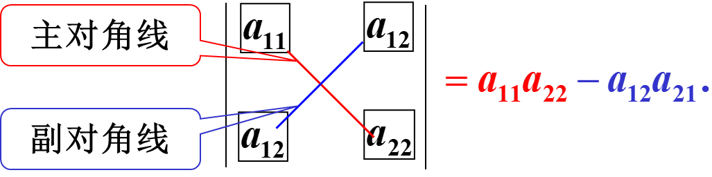
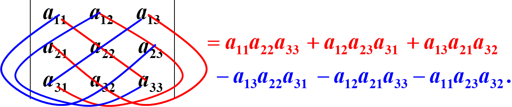
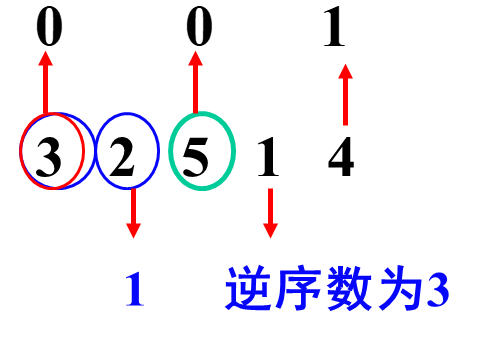
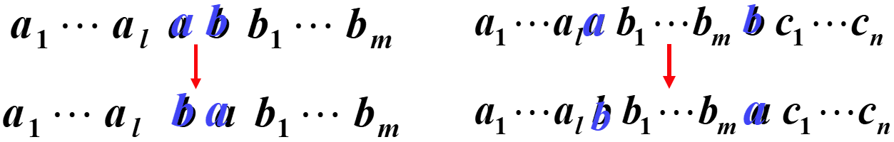
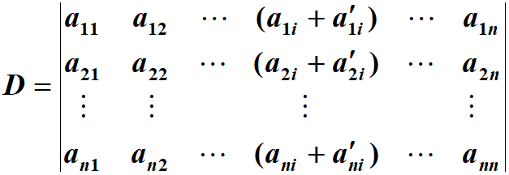
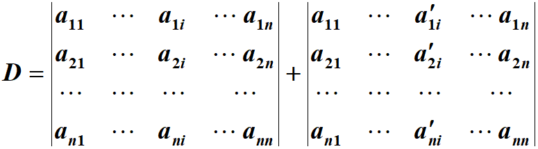
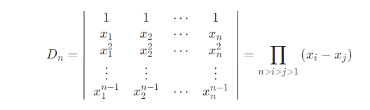
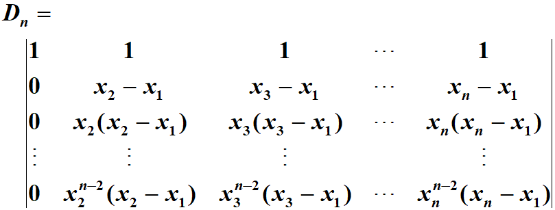
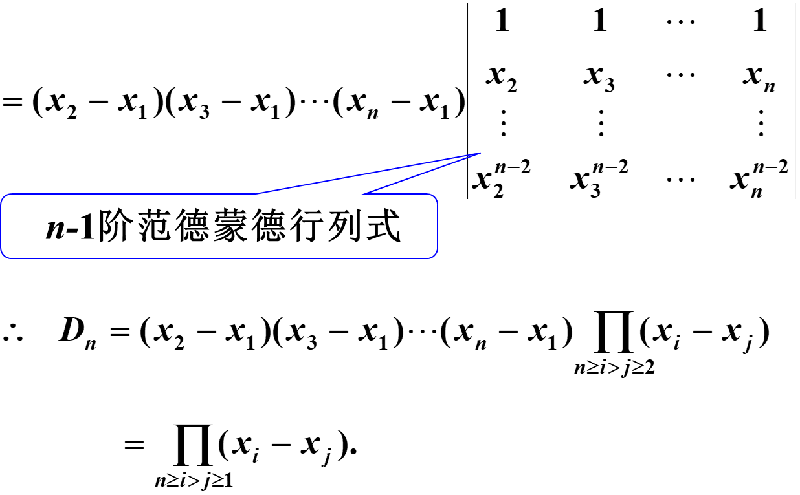

1 二阶与三阶行列式
1.1 二阶行列式
定义：由四个数排成二行二列（横排称行、竖排称列）的数表a11a21a12a22，表达式a11a22−a12a21称为上述数表确定的二阶行列式，并记作∣∣∣∣∣a11a21a12a22∣∣∣∣∣。
D=∣∣∣∣∣a11a21a12a22∣∣∣∣∣=a11a22−a12a21
计算规则：对角线法则

1.2 三阶行列式
定义：设有9个数排成3行3列的数表
a11a21a31a12a22a32a13a23a33
同时按以下规则进行计算：
（6）式称为数表所确定的三阶行列式。
1.2.1 对角线法则

- 红线上三元素的乘积冠以正号，蓝线上三元素的乘积冠以负号。
- 对角线法则只适用于二阶与三阶行列式。
2 全排列与其逆序数
2.1 概念
定义：把n个不同的元素排成一列，叫做这n个元素的全排列（或排列）。n个不同的元素的所有排列的种数，通常用Pn表示。
2.2 排列的逆序数
规定各元素之间有一个标准次序, n 个不同的自然数，规定由小到大为标准次序.
定义：在一个排列(i1i2⋯it⋯is⋯in)中，若数it>is则称这两个数组成一个逆序.
一个排列中所有逆序的总数称为此排列的逆序数.
例如，在排列32514中，排序的逆序数时0+1+0+3+1=5

2.3 排列的奇偶性
- 逆序数为奇数的排列称为奇排列；
- 逆序数为偶数的排列称为偶排列；
2.4 计算排列逆序数的方法
分别计算出排在1,2,⋯,n−1,n前面比它大的数码之和即分别算出1,2,⋯,n−1,n这n个元素的逆序数，这个元素的逆序数的总和即为所求排列的逆序数.
2.5 总结
- n个不同的元素的所有排列种数为n!
- 排列具有奇偶性
- 计算排列逆序数常用的方法有2种
3 n阶行列式
3.1 定义
定义：由n²个数组成的n阶行列式等于所有取自不同行不用列的n个元素的乘积的代数和∑(−1)ta1p1a2p2⋯anpn，记作：
D=∣∣∣∣∣∣∣∣∣∣a11a21⋮an1a12a22⋮an2⋯⋯⋯a1na2n⋮ann∣∣∣∣∣∣∣∣∣∣
简记作det(aij)，数aij称为行列式det(aij)的元素。
其中p1p2⋯pn为自然数1,2,…,n的一个排列，t为这个排列的逆序数。
D=∣∣∣∣∣∣∣∣∣a11a21⋯⋯⋯⋯an1a12a22an2⋯⋯⋯a1na2nann∣∣∣∣∣∣∣∣∣=∑p1p2⋯pn(−1)t(p1p2⋯pn)a1p1a2p2⋯anpn
3.2 说明
- 行列式是一种特定的算式，它是根据求解方程个数和未知量个数相同的一次方程组的需要而定义的
- n阶行列式是n!项的代数和
- n阶行列式的每项都是位于不同行、不同列n个元素的乘积
- 一阶行列式|a|=a不要与绝对值记号混淆
- a1p1a2p2⋯anpn的符号为(−1)t
- 主对角线以下（以上）的元素都为0的行列式叫做上（下）三角形行列式
- 特别地，主对角线以下和以上的元素都为0的行列式叫做对角行列式
3.3 总结
- 行列式是一种特定的算式，它是根据求解方程个数和未知量个数相同的一次方程组的需要而定义的.
- n阶行列式共有n!项，每项都是位于不同行、不同列的n个元素的乘积,正负号由下标排列的逆序数决定.
4 对换
4.1 对换的定义
- 在排列中，将任意两个元素对调，其余元素不动，这种作出新排列的手续叫做对换.
- 将相邻两个元素对调，叫做相邻对换．

4.2 对换与排列的奇偶性的关系
一个排列中的任意两个元素对换，排列改变奇偶性。
- 奇排列调成标准排列的对换次数为奇数
- 偶排列调成标准排列的对换次数为偶数
5 行列式的性质
5.1 主要性质
5.1.1 性质1
记行列式DT称为行列式D的转置行列式。
D=∣∣∣∣∣∣∣∣∣∣a11a21⋮an1a12a22an2⋯⋯⋱⋯a1na2n⋮ann∣∣∣∣∣∣∣∣∣∣DT=∣∣∣∣∣∣∣∣∣∣a11a12⋮a1na21a22a2n⋯⋯⋱⋯an1an2⋮ann∣∣∣∣∣∣∣∣∣∣
性质1：行列式与它的转置行列式相等。
- 行列式中行与列具有同等的地位,因此行列式的性质凡是对行成立的对列也同样成立.
5.1.2 性质2
证明：简单的想，交换两行，那么相当于选出的每个排列中都有两个元素的位置进行交换，那么这个排列的逆序数就会+1或-1，所以每个排列的结果都加一个负号，所以行列式变号。
推论：如果行列式有两行（列）完全相同，则此行列式为0。
5.1.3 性质3
- 行列式的某一行（列）中所有的元素都乘以同一数k，等于用数k乘此行列式
推论：行列式的某一行（列）中所有元素的公因子可以提到行列式符号的外面。
5.1.4 性质4
行列式中如果有两行（列）元素成比例，则此行列式为零。
5.1.5 性质5
若行列式的某一列（行）的元素都是两数之和，例如

则D等于下列两个行列式之和：

5.1.6 性质6
把行列式的某一列（行）的各元素乘以同一数然后加到另一列（行）对应的元素上去，行列式不变。
5.2 应用举例
计算行列式常用方法：利用运算ri+krj把行列式化为上三角形行列式，从而算得行列式的值。
6 行列式按行（列）展开
一般来说，低阶行列式的计算比高阶行列式的计算要简便，因此可以考虑使用低阶行列式来表示高阶行列式的问题，为此，先引入余子式和代数余子式的概念。
6.1 余子式和代数余子式
在 阶行列式中，把元素aij所在的第i行和第j列划去后，留下来的n-1阶行列式叫做元素aij的余子式，记作Mij。
记Aij=(−1)i+jMij，叫做元素aij的代数余子式。
行列式的每个元素分别对应一个余子式和一个代数余子式。
引理：一个n阶行列式，如果其中第i行所有元素除aij外都为零，那么这个行列式等于aij与它的代数余子式的乘积，即D=aijAij。
6.2 行列式按行（列）展开法则
定理3：行列式等于它的任一行（列）的各元素与其对应的代数余子式乘积之和，即
D=ai1Ai1+ai2Ai2+⋯+ainAin(i=1,2,⋯,n)
例：证明范德蒙德（Vandermonde）行列式

证明：使用数学归纳法
现在假设对于n-1阶范德蒙德行列式成立，要证明对于n阶范德蒙德行列式也成立。

按第1列展开，并把每列的公因子(xi−x1)提出，就有

推论：行列式任一行（列）的元素与另一行（列）的对应元素的代数余子式乘积之和等于零，即
ai1Aj1+ai2Aj2+⋯+ainAjn=0,i=j
6.3 关于代数余子式的重要性质


 微信
微信 支付宝
支付宝